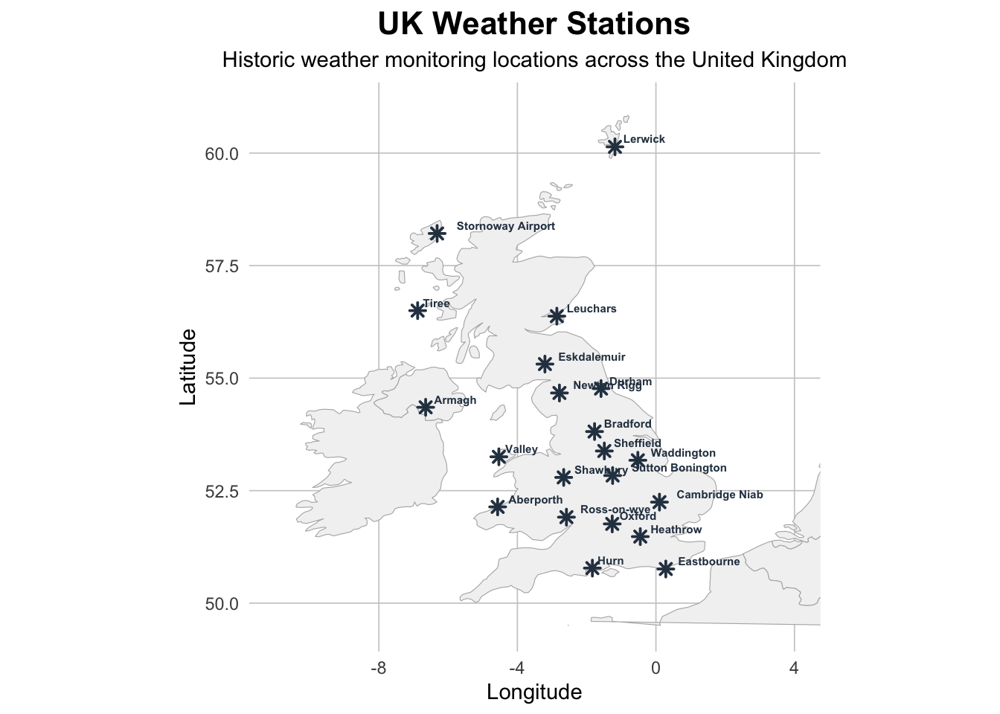

Visualizing Air Frost Days in the UK (TidyTuesday!)
R
Tidy Tuesday
Visualization
Author
Brandon LeBeau
Published
October 21, 2025
Here is my second Tidy Tuesday attempt! I’ve always enjoyed working with weather data—it’s intuitive, relatable, and something I’ve even used in my introductory statistics book.
As we are entering winter here in North America, I was interested in understanding more about the number of air frost days that each location had. This would be dependent on location, but was curious how much this changes across the UK. Also, I was interested given it is an island which will impact the weather.
This is a general structure I’m aiming for in this post.
Do some data processing.
Visualize the locations after the data processing.
Create a static chart representing the total number of air frost days.
Create an animated chart, using the gganimate package, to visualize these running totals by year and month combinations.
Data Processing
First, some data processing steps. I load the data, then using the dplyr package, count the total number of air frost days, create a date object that pairs the year and month information for later animation, and finally remove those that have missing data. I first filtered arbitrarily by times after 1960, there seemed to be less missing data for air frost after this date. I removed those with missing months as a simple way to make the cumulative number of air frost days as comparable as possible.
I was first curious where these weather stations were located to understand how they impact the number of cumulative days of air frost. Most of these are in the southern portion of UK, but there are a few that are in more remote locations. I’m curious how the ocean currents affect this, that would be a fun addition to this map.
Code
library(ggplot2)library(maps)library(dplyr)stations <- station_meta |>semi_join(cumulative_airfrost, by =join_by(station))# Get world map dataworld_map <-map_data("world")# Filter to UK regionuk_map <- world_map |>filter(long >=-11& long <=6& lat >=49.5& lat <=61)# Create the plotggplot() +geom_polygon(data = uk_map, aes(x = long, y = lat, group = group),fill ="gray95", color ="gray70", linewidth =0.2) +geom_point(data = stations,aes(x = lng, y = lat),size =2, color ="#2C3E50", shape =8, fill ="#E74C3C", stroke =1) +geom_text(data = stations,aes(x = lng, y = lat, label = station_name),size =2, hjust =-0.2, vjust =-0.5, fontface ="bold", color ="#2C3E50") +coord_fixed(ratio =1.3, xlim =c(-11, 4), ylim =c(49.5, 61)) +labs(title ="UK Weather Stations",subtitle ="Historic weather monitoring locations across the United Kingdom",x ="Longitude", y ="Latitude") +theme_minimal() +theme(plot.title =element_text(face ="bold", size =16, hjust =0.5),plot.subtitle =element_text(size =11, hjust =0.5),panel.grid.major =element_line(color ="gray80", linewidth =0.3),panel.grid.minor =element_blank(),plot.background =element_rect(fill ="white", color =NA),panel.background =element_rect(fill ="white", color =NA) )

Static Chart
First, I create a static chart as my baseline evaluation of the data. These again only include those with complete data (768 rows of data) based on my filter after 1960 (e.g., each station has a full set of monthly observations from 1961–2024 (64 years × 12 months = 768)). Eskdalemuir was the one with many more than others. This is not the most northern location, but is in the top third of the map and is inland compared to the other northern weather locations. The ocean currents are likely helping to regulate the temperature.
Tiree has the fewest number of air frost days and is located further north than Eskdalemuir, but is right on the western side on the ocean.
Of note, to visualize this, I selected the last date for each station in the data and plotted the cumulative air frost attribute. This allowed me to plot a single value representing the total number since 1961.
Code
theme_set(theme_minimal(base_size =14))cumulative_airfrost |>group_by(station) |>slice_max(date, n =1) |>ggplot(aes(x = cumulative_af, y = forcats::fct_reorder(station, cumulative_af))) +geom_col() +xlab("Number of Air Frost Days") +ylab("")
Animated “Running” Bar Chart
Finally, using gganimate, I create a running bar chart that shows how the number of air frost days accumulates after every month. I’ve used gganimate a few times, but it was fun to get reacquainted with the package, it really does work very well. I made use of the transition_states() function to do the animation that shows a new version for every month from 1961 to 2024.
Code
library(gganimate)ggplot(cumulative_airfrost, aes(x = cumulative_af, y = forcats::fct_reorder(station, cumulative_af))) +geom_col() +labs(x ="Number of Air Frost Days",y ="",title ='Year: {closest_state}') +geom_text(aes(x = cumulative_af, label =as.character(cumulative_af)), hjust ="left") +theme_minimal(base_size =14) +# Here comes the gganimate codetransition_states( date,transition_length =3, state_length =1 ) +enter_grow()
Overall, the data reveal clear spatial differences in frost accumulation across the UK, with inland stations showing more frost than coastal ones. I’d like to explore how elevation and proximity to the ocean contribute to these differences in future analyses.